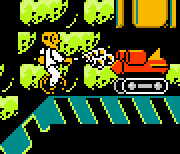

I'm new here, should I submit this map?
I made a sandwich for a pie so I yowled and circled around Maria's legs almost tripping her as she walked.
?
?
Most definitely, that's quite the bundle of fun you've got there. I hope to see more maps from you in the future. Enjoy your stay!Thanks, here's another map I made, hope you like it.
The Incredible Crash Test Dummies for the NES

It appears we have a new race-maker on our hands.Thanks for the advice.
I've played both your maps, Orange-Subs, and they are very good for someone who's new here like you. However, they can be improved. If you are looking to see what makes a race map really good, you should check these out: http://numa.notdot.net/browse?sort=rating&q=race
Those are the all-time top-rated race maps on NUMA. You could learn a lot from them. You're off to a great start, keep it up! And welcome to the forums!
GBA- Castlevania Aria of Sorrow, Doom, Kirby Nightmare in Dream Land, Micro Machines, Ninja Five-0, Pokmon Fire Red, Tales of Phantasia, Fire Emblem, Ultimate Arcade Games, Zelda Link to the Past/Four Swords, Metroid Zero Mission, Super Mario Bros. 3.
Mac-
Age of Empires 2, N, Marble Blast Gold (came free w/ computer)
GC-
Resident Evil 4
007 Agent Under Fire, Mario Party 5, Metroid Prime, Viewtiful Joe, SSBM, Zelda Ocarina of Time, (other games I can't think of now).
Mac-
Age of Empires 2, N, Marble Blast Gold (came free w/ computer)
GC-
Resident Evil 4
007 Agent Under Fire, Mario Party 5, Metroid Prime, Viewtiful Joe, SSBM, Zelda Ocarina of Time, (other games I can't think of now).
Ninja Five-0 for the gba (It's Like Bionic Commando meets Shinobi)


There can never be too many characters.2 words, Dr. Wright
He's not a character, silly.my bad. he's still a waste of space
Three things I would still like to see are
1. POW Block
2. Kuribo's Shoe
3. Kirby should be able to use the sing ability.
Having a WoW account.
Please rate Chrome, Bottleneck and remnant.Rated
Hidden Wheel Blueprint Unicorn Odyssey could use some votes.
113: Run into an airport with hotdogs strapped to you.
114: Enter a serial killer's house wearing a care bear costume.
115: Wear a Satan costume to Jesus camp.
114: Enter a serial killer's house wearing a care bear costume.
115: Wear a Satan costume to Jesus camp.
I'm going to Mexico tomorrow, be back in a week (not that you care). Also, when I get back I will be deleting all my maps & resubing all my decent maps with versions that have less problems with them (why, because I feel like it).
Ok how bout I don't resub them I just put up the better versions (via editing) and delete all my crap maps?
Subhumans - From the Cradle to the Grave
Oh lawl.Me and >Star used to chill after dark...Excuse me ? What gender do you think i am Shark ?
but when she took my heart...
that's when we fell apart...
Oh...55%
I don't know you 40%
6/10, nice picture, but you stretched it and made it all pixely, try retargeting when resizing like that instead.
It's not the fact that the lyrics are morbid/disturbing that bothers me, it's the fact that they can make such a poorly written song like that and take themselves seriously as a band.
20 minutes til new year, have a happy new year and try not to wake up with too bad of a hangover (:
BeSilence, when I read your name, I am Reminded of a man in a bubble, He cannot hear his surroundings, and his surroundings cannot hear him. This is you.
That's not a man, it's a box man. Can I has a sprite of me?
Guys, these games are meant to be reviwed as commercial games, not freewareSo does this mean quake ds and doom ds are not considered games by your standards?
Since when did they exist? ROM format?Maybe
Erm. Chase.That's quake arena ds, which isn't even out yet, I was talking about quake ds. The source code was released for doom, would that make reviewing doom ds any more acceptable?
user posted image
It's perfectly legal. Just not sold in where you live in. I've never heard of this, either.
5/10 for lack of originality.
^ Is genderly confused
< Is hungry
v Will give me food
< Is hungry
v Will give me food
Buh, if its legal, you can review it.
It isn't sold here though...
Quake arena ds isn't even out yet. Seeing as id released a free version of doom for pc/mac/linux as well as the source code for doom, and ds doom is freeware, I would think it would be legal. Not sure about quake ds, I'd have to look into it, but I will write reviews for other ds games as well.
Intro5pect - Profit Margins
Big women, I like the size, big women flabby thighs.
Big women, big women, big women .. they fill my eyes.
Oooh a a ah !
Here they come, walking down the street, big and bouncy look so neat.
I like them best between the sheets, big women give me a treat.
Skinny wenches will not do, I need a big one to see me through.
I've gotta get some meat to see me through the night,
in the morning I feel alright.
Big women, big women, big women .. they fill my eyes.
Oooh a a ah !
Here they come, walking down the street, big and bouncy look so neat.
I like them best between the sheets, big women give me a treat.
Skinny wenches will not do, I need a big one to see me through.
I've gotta get some meat to see me through the night,
in the morning I feel alright.
Rated & commented winjet's
http://numa.notdot.net/map/113002
http://numa.notdot.net/map/113002